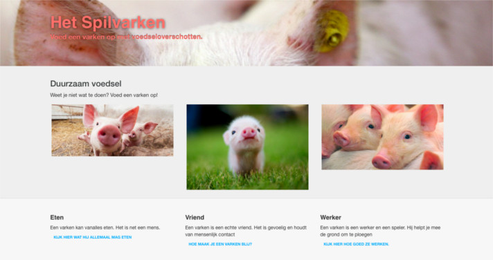
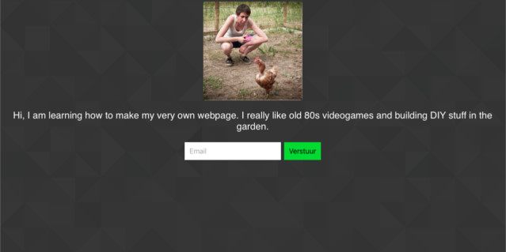
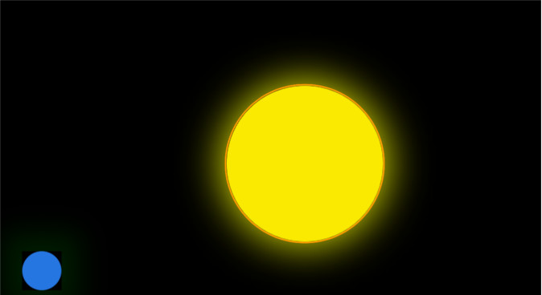
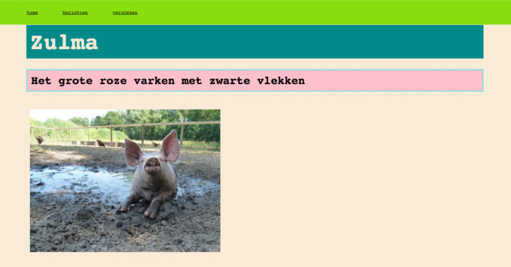

Portfolio Nastasia Vanderperren
Realisaties
Hier kan je al mijn realisaties vinden
Bootstrap
Probeersel met bootstrap
Codecademy
Een website bestaande uit een pagina. Dit werd gemaakt via Codecademy
Heelal in HTML/CSS
Een eenvoudige tekening van het heelal gemaakt in HTML5 en CSS3
Het Spilvarken
Oefenen met HTML en CSS